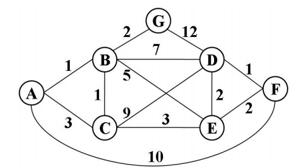

Miscelaneas
Recordemos que a partir del grafo G = ( V, A ), el resultado del algoritmo de Prim es un conjunto de aristas T donde la suma de las mismas es el valor C correspondiente costo mínimo de inerconectar todos los vértices de G, veamos algunas particularidades del resultado de aplicar el algoritmo de Prim, tomando el siguiente grafo como ejemplo:

- Si el grafo tiene costos repetidos, podría haber resultados diferentes porque el conjunto de las aristas puede ser distinto, pero el costo minimo es el mismo. Esto se debe a que tomando una arista descarto otra de igual costo. Por ejemplo:
(F,D),(D,E),(E,C),C,B),(B,A),(B,G) costo 10 ----> tomando (D,E) descarto (F,E)
(F,D),(F,E),(E,C),C,B),(B,A),(B,G) costo 10 ----> tomando (F,E) descarto (D,E)
- Tomando vértices diferentes como raíz, la secuencia en que se toman las aristas podría ser diferente. Por ejemplo:
tomando F como raíz, la secuencia de aristas es: (F,D),(D,E),(E,C),C,B),(B,A),(B,G)
tomando A como raíz, la secuencia de aristas es: (A,B),(B,C),(B,G),(C,E),(E,F),(F,D)
La secuencia en que se tomaron las aristas es diferente pero el conjunto de aristas resultante es el mismo.